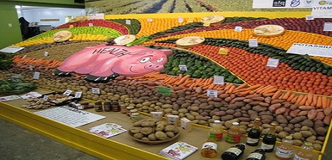

Healthy Vegetables and Herbs

About Kelly Fresh Foods it was set up his Fruit and Vegetable distribution business in Skreen, Co Sligo over thirty years ago, building it up to supply major supermarkets, shops and restaurants across the north west of the country, engaging local workers and drivers to meet the demand. When Central distribution for supermarkets began to be implemented from 2000 on, local suppliers such as Joe Kelly were no longer used, and this began the decline of his original customer list and business. Joe Kelly responded to this change with courageous investment and innovation. With the help of Sligo Leader Company, Sligo County Enterprise Board, and other bodies, Joe formed a plan to move into Prepared and packaged fresh vegetables, supplying Restaurants, Hotels, Hospitals and other large catering organisations. More text...